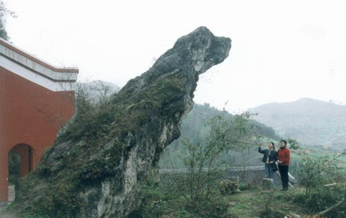

賨（cóng）人谷:国家AAAA级旅游区，省级风景名胜区，省级森林公园，省级生态旅游示范区。位于四川省达州市渠县城东26公里，地处华蓥山脉中北段，面积41平方公里，以奇山、秀水、幽洞、丽峡、飞瀑、湖泊、涌泉、怪石、古栈、茂林著称，被誉为川东“小九寨”。 賨人是古代川东地区影响深远、强悍尚武的一支少数民族，亦是渠县最古老的土著民族。他们创造了賨人文化，留下了賨国都城遗址、汉阙、咂酒等珍贵的民族文化遗产。为了纪念他们的尚武精神，賨人谷的名字由此而来。 賨人谷拥有全国唯一的賨人穴居部落遗址和賨人文化陈列馆，拥有古賨文化与秀丽的自然风光，有"奇山奇水奇石景，古賨古洞古部落"的美誉。
|
 |
|
青蛙石 |
賨人谷牌匾 | |
青蛙石，又名神犬啸天，位于观音崖下平台上。该石高3m多，宛如一只巨大的青蛙，欲跳未跳，神采奕奕，形态逼真。从右侧看，又似一只天狗，端坐在崖前，向西注视着山下的动静，神态活现。这一大自然的杰作，巧夺天工。无论是规模之大，形状之奇，神态之活，在四川省内的天然奇石中实属罕见。 |
 | |
老龙洞 |
青蛙石 | |
老龙洞，是溶洞群中规模最大、最奇的，在老龙村境内。该洞高20m，宽约30m，长在1000m以上。洞中有暗河和地下湖，可以划船荡舟。洞顶悬吊形状各异的钟乳石，欲坠未坠。洞中有一高达500余米的"通天洞"，逐级盘旋而上可达山顶。老龙洞坚硬的岩石经水侵蚀、冲刷和磨砺，形成石花、石柱、石钟乳等洞天奇观，被誉为"水上画廊"。 |
||
穴居部落 |
賨人谷溶洞 | |
穴居部落，是賨人在先秦时期，因避战乱，在悬崖上因洞造屋，因崖修栈，形成建在洞穴里的穴居部落。整个崖居群上下相通，左右相连；室与室之间有石梯、甬道及栈道相连。崖居建造有防御野兽和外族侵略的山寨大门。洞穴内，在岩石上凿成的神龛、石灶、石床等一应俱全。它是川东地区发现的规模最大、档次最高的古人洞窟部落遗址。 |
||
| 賨人谷栈道 | ||
1 2